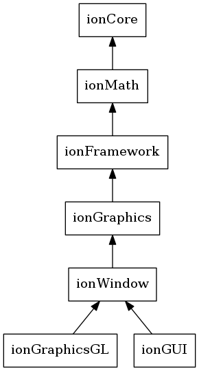

Modules¶
ionCore¶
ionCore is the basis for all other modules, a set of boilerplate functions and templates. See module documentation here: ref moduleCore
ionFramework¶
ionFramework provides basic application structures including event listeners.
ionWindow¶
ionWindow wraps GLFW and hooks up to ionFramework interfaces.
ionGraphics¶
ionGraphics provides a interface to the graphics hardware that can be fulfilled by either DirectX or OpenGL.
ionGraphicsGL¶
ionGraphicsGL implements the ionGraphics interfaces for OpenGL.